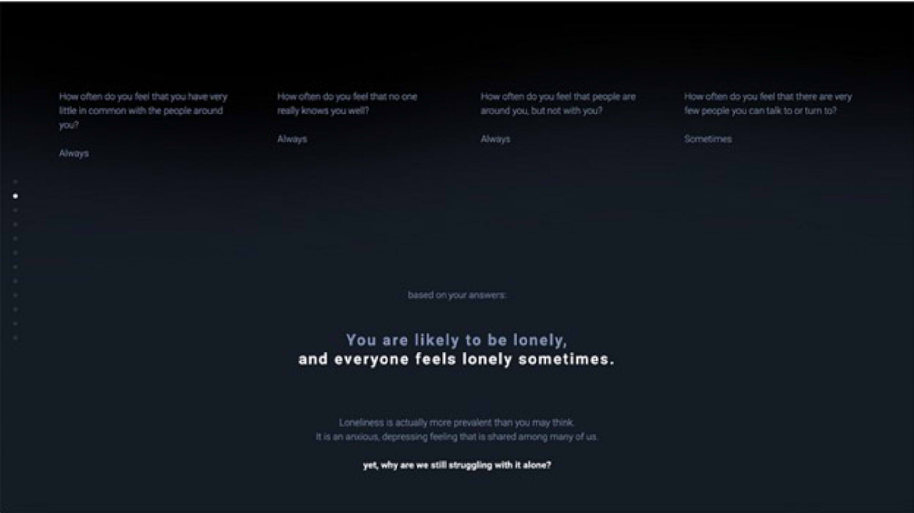

Power Play
Olenka Yuen & Shayne Laroque
Description
Our starting topic is power consumption. It is a pertinent point of discussion for us personally, and highly important headline culturally, meriting further exploration because it is something which has a variety of impacts in today’s society; economic considerations from rising costs of goods and services due to the pandemic, increasing pressure to be mindful of one’s carbon footprint for environmental, and, while not directly related to us personally here in Canada, the war in Ukraine and the resulting media messaging directed towards Western Europe to reduce power consumption in an effort to ease off of Russian energy, which consequently only furthers the global population's mindfulness of this topic.
It is an important topic to look into as an explorable networked space because of its daunting nature. “Power consumption”, to many, is both progressively taking up more space in the public psyche while remaining entirely intangible to the layman. People are aware of the general need to lower their consumption for any of the reasons listed above, but are either indifferent because of ignorance, or disillusioned because of the scale of power consumption differences between individuals and large corporations. With our exploration of the topic as a networked space, we hope to confront the users with their expenditure habits as well as have them leave the experience feeling empowered to take action in their daily lives to help lower their power consumption.
The kind of relationship we hope to foster with this project is one where the users do not feel they are being patronized, but rather create a feeling of mutual respect. We are hoping to achieve this by having the interface and experience apply the principles of Design Thinking and truly empathize with where the users are coming from to serve their specific needs.
By having users participate in an immersively presented, limited presumption survey, in conjunction with other data, we hope to challenge and destabilize the users by understanding where they are coming from in their responses through the use of logic jumps to guide them through the journey of the presentation/survey questionnaire that will give them shock value by immediately challenging their responses or expanding on them through previously collected survey responses or third party data, interesting visualizations of the data, and related visuals such as photo and video.
In the context of empowerment, we approached the ideation of our networked space specifically with the goal to help, challenge, and teach users. It does so by taking user input and challenging their assumptions about their own power consumption directly, through smart data driven retorts to their survey responses. We hope not to dissuade people from taking action through these retorts by hitting them depressing data, but instead provide the bigger picture and then zoom in and provide bite sized solutions they can tackle with the right tools. We chose this approach because, from our research, a lot of the resources online are way too much information with little direction (Honorable mention to the horribly ironic BP Oil Carbon Footprint Calculator). We hope to take similar information that many of these online resources used to display macro overviews of the energy dilemma and break it down into more municipal level actions, ranging from DIY home improvement upgrades, links to government incentivization programs for lowering one’s carbon footprint, transportation alternatives, and even dietary recommendations based on preferences.
Finally, the users will be able to see how all survey responses stack up and see where common misconceptions lie. The overall goal is to present people, both the educated and uneducated, with a pointed perspective and actions they can take personally that will have measurable impact.
Visual Storyboard


Similar projects
Loneliness: A Social Story
Loneliness: A Social Story “Loneliness: A Social Story” by Guangyu Du, Lucy Yip and Runjia Tianis of Harvard University Graduate School of Design, is a project to raise awareness on a social issue that many people feel, but is rarely spoken about. The project is a collection of visualized datasets and illustrations about loneliness. It shows several statistics or data that might factor into the cause, for example; population, region, gender, and lifestyle. Finally, the project ends by suggesting global funding or support centres as a call to action. This project is important because it gives voice to an experience that is often seen as taboo. It shows that loneliness is normal and that it can be a source of strength. The presentation is strengthened by the accompanying design language; the colour scheme, illustrations, and data visualizations all carry a melancholic, slow paced tone, which matches the messaging well.
This all comes together to create a cohesive ensemble which is not only an aesthetically pleasing work but one which has merit as a teaching tool.
Can You See Me Now
Can You See Me Now is a mixed-reality chase game developed by two companies, Blast Theory and The Mixed Reality Lab in 2001. This game gives a modern twist to hide and seek by having the hiders hide in the virtual world and the seekers seek their targets in the real world. The users will control an avatar while the seekers will hold a GPS device to track the avatars during the play.
Carbon Footprint Calculator

The Nature Conservancy includes a calculator on their site that allows the user to track their carbon footprint by inputting the user’s daily energy consumption. How the calculator works is that it asks the user to input information such as, the number of people you live with, how many calories of food you consume per day, what vehicle you use, and how many miles you travel. It’s a utilitarian tool with a clear use case designed to cut to the chase, designed to get out of the way visually.
How Will It Be Different
Our project is inspired from the above sources, and will take the lessons from the best and worst of them to inform our design and creation process of our initial vision. From your typical carbon footprint calculator to the access of user location data, we can collect a data point that can be part of the data set used to craft a pleasing visual narrative. In addition to the Loneliness project, we can build around an issue that is often overlooked (climate change) and encourage people to change their habits as well.